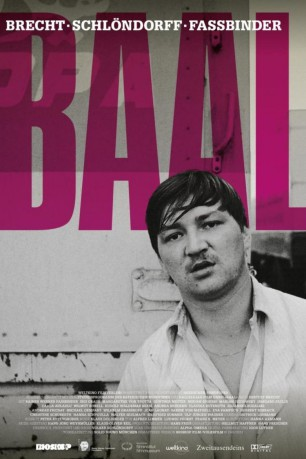
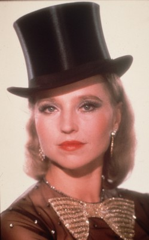

#9056 Baal
 
 IMDB-Wertung: 6.6 / 10
IMDB-Wertung: 6.6 / 10  Metascore: 0
Metascore: 0 
1969: Baal Lyriker und Anarchist, hat ein ambivalentes Verhältnis zur bürgerlichen Gesellschaft. Mal versucht sie, ihn zu vereinnahmen, dann stößt sie ihn wieder weg. Der Dichter führt ein unstetiges Leben: Wenn er nicht in seiner Dachkammer ist, streunt er umher. Sein Weg führt in durch Wälder und auf Autobahnen – und immer wieder zur Flasche. Er schläft mit vielen Menschen beider Geschlechter und schwängert eine junge Schauspielerin, doch bei ihr bleiben kann er nicht. Sie ist ihm eine Last, sein inneres Tier fühlt sich in einen Käfig gesperrt – ein Tier, das ihn zum Mord an einem Freund treibt. Aber ist wirklich er es, der sich asozial verhält? Oder doch die Gesellschaft? Adaption eines Bühnenstücks von Bertolt Brecht.
Jahr: 1970
Dauer: 87 Minuten
FSK: 12
Land: West-Deutschland Studio: HRTonspuren:
Untertitel:
Auflösung: 1080p (1456x1080) Größe: 6717 MB
Genre: Drama
Regisseur: Volker Schlöndorff
Drehbuch: Bertolt Brecht
Soundtrack: Klaus Doldinger
Darsteller:
 Rainer Werner Fassbinder als Baal
Rainer Werner Fassbinder als Baal- Margarethe von Trotta als Sophie
-  Hanna Schygulla als Luise
- Marian Seidowsky als Johannes
- Christine Schuberth als Stripperin Sabitka
 Günther Kaufmann als Kutscher Orgauer
Günther Kaufmann als Kutscher Orgauer Johannes Buzalski als Penner bei Prozession
Johannes Buzalski als Penner bei Prozession Michael Gempart als Mann mit Kamm
Michael Gempart als Mann mit Kamm- Jean Launay als Mann mit Magengeschwür
 Harry Baer als Gast am kalten Buffet
Harry Baer als Gast am kalten Buffet Irm Hermann als Hausfrau
Irm Hermann als Hausfrau Rudolf Waldemar Brem als Erster Holzfäller
Rudolf Waldemar Brem als Erster Holzfäller- Sigi Graue als Ekart
- Günther Neutze als Mech
- Irmgard Paulis als Johanna
- Wilmut Borell als Mjurk
- Walter Sedlmayr als Anwalt Pschierer
- Miriam Spoerri als Emilie Mech
- Carla Egerer als Junges Weib
- Peer Raben als Holzfäller mit rotem Hemd
- Andrea Brüdern als Junge Dame
- Claudia Butenuth als Frau mit Baby
- Sigi Sommer als Zweiter Holzfäller
- Herbert Rimbach als
- Ulf-Jürgen Wagner als
- András Fricsay Kali Son als
- Wilhelm Grasshoff als
- Sabine von Maydell als
- Eva Pampuch als
Datei: X:\1970\Baal (1970, FSK12, 1456x1080).mkv seit 19.07.2018
Festplatte: HD 1900-1970
 Es gibt insgesamt 24 Filme in der Gruppe '1970'
Es gibt insgesamt 24 Filme in der Gruppe '1970'